01Принцип і історія
Блоттинг (англ. blotting — промокання, перенесення) — це група високочутливих методів, у яких складну суміш біомолекул (ДНК, РНК, білки, глікоконʼюгати, ліпіди чи низькомолекулярні глікозиди) спершу розділяють в гелі або на тонкошаровій пластинці, потім переносять і закріплюють на твердій пористій мембрані й лише після цього розпізнають потрібну молекулу специфічним міченим зондом [1, 2].
Така логіка розв’язує головну проблему аналізу: гель надто крихкий і щільний, щоб в ньому «ловити» молекули зондами чи антитілами, а мембрана — відкрита, міцна, її можна багато разів промивати й обробляти розчинами. Розділення дає розмір, зонд — ідентичність: у підсумку на мембрані видно саме ту смугу, яка містить шукану послідовність, білок чи глікозид.
Основу всієї родини заклав британський біолог Едвін Саузерн (Edwin Southern), який 1975 року описав капілярне перенесення рестрикційних фрагментів ДНК з агарози на нітроцелюлозу й гібридизацію з радіоактивним зондом [3, 4]. Решту варіантів за жартівливою аналогією зі сторонами світу («компас молекулярної біології») назвали Нозерн, Вестерн та Істерн.
1.1Коротка історія
Назва «Саузерн» збігається з прізвищем автора, а решта назв — це гра слів. Термін Нозерн (1977) увів Дж. Алвайн зі співавторами для переносу РНК [5]; Вестерн вперше описали Товбін зі співавторами (1979) [6], а назву «western blotting» закріпив Бернетт (1981) [7]. Електрофорез білків у SDS-PAGE, без якого немає Вестерну, запропонував Леммлі в 1970 р. [8]. Істерн — найменш однозначний термін: ним називають кілька споріднених методик (блотинг посттрансляційних модифікацій білків і ТШХ-блотинг низькомолекулярних глікозидів), створених різними лабораторіями в 1990-х і 2000-х роках [9, 10].
1.2Універсальна схема: шість стадій
Незалежно від мішені будь-який блот проходить однакові стадії. Оберіть вид блоттингу й клацайте на стадії — побачите, що відбувається на кожній з них.
Верхні кнопки перемикають метод; клацніть на стадію, щоб прочитати параметри й побачити схему.
1.3Який блот мені потрібен?
Вибір методу визначається питанням, на яке потрібна відповідь. Спробуйте підібрати метод для типових задач із фізіології та вірусології рослин.
Оберіть завдання — підказка покаже метод, мембрану, зонд і те, чого очікувати.
02Порівняння методів
Наведена нижче таблиця зводить відмінності між методами. Проходьте її по рядках: одразу видно, де схожість (стадії, мембрана, візуалізація) і де принципова різниця (мішень та зонд).
| Критерій | Саузерн-блоттинг | Нозерн-блоттинг | Вестерн-блоттинг | Істерн-блоттинг |
|---|---|---|---|---|
| Мішень | ДНК: геномна, плазмідна, вірусна, мтДНК, хпДНК | РНК: мРНК, пре-мРНК, вірусні РНК, мікроРНК, siRNA | Білки й поліпептиди | ПТМ білків (глікани, ліпіди, фосфо-групи) і низькомолекулярні рослинні глікозиди |
| Підготовка проби | Рестрикція, депуринізація (0,25 М HCl), лужна денатурація (NaOH) | Нагрівання з формамідом і формальдегідом (або гліоксаль / сечовина) | Кип’ятіння в буфері Леммлі з SDS і β-меркаптоетанолом / DTT | SDS-PAGE; для глікозидів — метанольний екстракт без денатурації |
| Матриця | Агароза 0,7–1,5 % (TAE або TBE) | Формальдегід-агароза (мРНК) або 15 % ПААГ із 7 М сечовиною (малі РНК) | ПААГ: концентруючий 4–5 %, розділяючий 8–15 % | SDS-PAGE чи силікагелева пластинка ТШХ / ВЕТШХ |
| Перенесення | Капілярне (10–20× SSC), вакуумне | Капілярне або напівсухий електроблотинг (для малих РНК) | Мокрий або напівсухий електроблотинг (буфер Товбіна) | Електроблотинг або термічне пресування (120–180 °C) з пластинки ТШХ |
| Мембрана й фіксація | Позитивно заряджений нейлон (Hybond-N+) або нітроцелюлоза; УФ 254 нм чи 80 °C | Позитивно заряджений нейлон; УФ-крослінкінг або 80 °C; для малих РНК — EDC | PVDF (активація метанолом) або нітроцелюлоза | PVDF або PES; для глікозидів — NaIO₄ і кон’югація з БСА на мембрані |
| Зонд | Одноланцюговий ДНК/РНК-зонд: ³²P, DIG, біотин | ДНК-олігонуклеотид або рибозонд: ³²P, DIG | Первинні й вторинні антитіла (HRP, AP, флуорофор) | Лектини (ConA, WGA), CTB, анти-фосфо або анти-глікозидні MAb |
| Принцип розпізнавання | Комплементарність основ (водневі зв’язки ДНК–ДНК або ДНК–РНК) | Комплементарність основ (РНК–ДНК або РНК–РНК) | Імунохімічне «антиген–антитіло» (епітоп) | Зв’язування вуглеводного/ліпідного епітопу лектином чи токсином або гаптену антитілом |
| Візуалізація | Авторадіографія, фосфорімеджинг, хемілюмінесценція (анти-DIG-AP + CSPD / CDP-Star) | Авторадіографія, хемілюмінесценція, колориметрія (NBT/BCIP) | ECL (люмінол + H₂O₂), DAB, TMB, NBT/BCIP, ІЧ-флуоресценція | 4-хлор-1-нафтол, DAB, NBT/BCIP, ECL, флуоресценція |
2.1Мембрани: що обрати
Мембрана — серце блоту: вона має міцно утримувати мішень і не «світитися» фоном. Від типу мішені залежать матеріал, ємність і спосіб фіксації. Відфільтруйте мембрани за потрібним типом молекул і порівняйте ємність, обробку й особливості.
Фільтр за мішенню; значення ємності орієнтовні й залежать від виробника.
2.2Скільки триває кожен блот
Усі блоти — багатоденні, але «руками» працюють лише частину часу: решта — інкубації та перенесення «на ніч». Діаграма показує хронометраж кожного протоколу з цієї сторінки.
Темні сегменти — активна робота; світлі — очікування, інкубація; наведіть курсор на сегмент.
03Розділення: електрофорез і ТШХ
Блот лише настільки добрий, наскільки добре розділено суміш. Тому першою стадією завжди є електрофорез (або ТШХ для малих молекул). У гелі сітка полімеру працює як молекулярне сито: під дією електричного поля негативно заряджені молекули рухаються до анода, і чим менша молекула, тим швидше вона мігрує [11].
Основне співвідношення, яким користуються для оцінки розміру невідомої смуги за маркером:
3.1Модель гель-електрофорезу
Оберіть тип гелю, змінюйте концентрацію та час електрофорезу й дивіться, як розходяться смуги маркера й досліджуваної проби. Клацніть на смузі, щоб оцінити її розмір за калібрувальним графіком lg M — d.
Лінійна залежність lg M від відстані працює лише в «робочій» області гелю; за її межами смуги стискаються.
3.2Як це виглядає в лабораторії

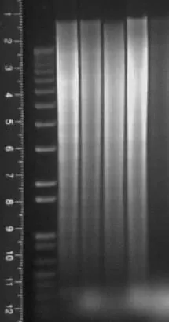

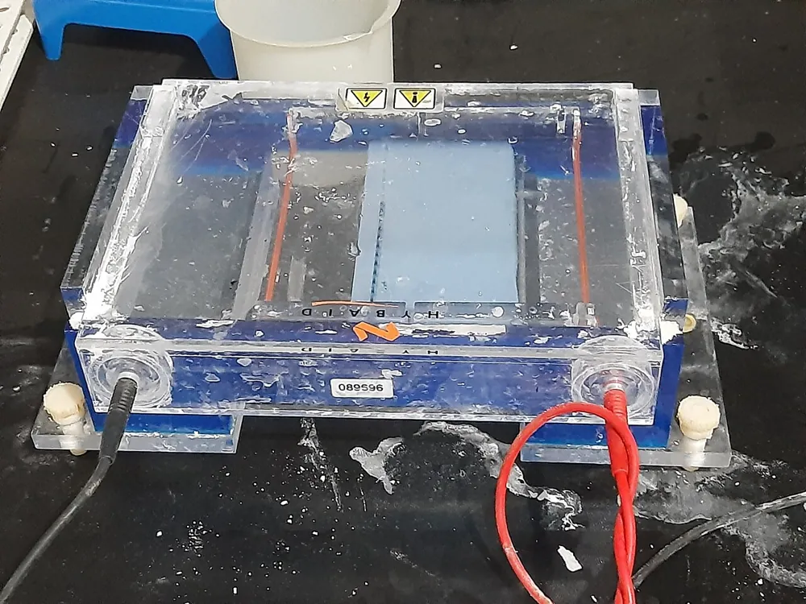

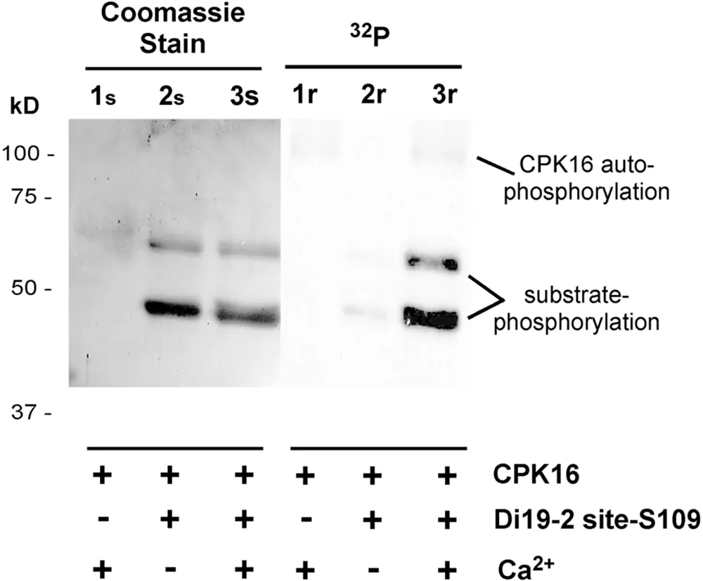
3.3Три типи гелів і чому вони різні
- Агарозний гель (0,7–1,5 %) — для ДНК від сотень п.н. до десятків т.п.н. Агароза має великі пори; для ДНК чим більша концентрація, тим краще розділяються малі фрагменти [11].
- Денатуруюча формальдегід-агароза (1,0–1,2 %) — для довгих РНК. Формальдегід і формамід руйнують шпильки, тож міграція залежить лише від довжини; 5–15 мкг РНК на доріжку.
- ПААГ — для білків (SDS-PAGE: концентруючий 4–5 % + розділяючий 8–15 %) і малих РНК (15 % ПААГ + 7 М сечовина у 0,5× TBE) [12, 13]. Поліакриламід має дрібні пори й дозволяє розрізняти молекули, що відрізняються на одиниці нуклеотидів чи кілька кДа.
Контроль розділення ДНК та РНК фарбують бромистим етидієм (EtBr) чи SYBR Safe й фотографують під УФ: цілісна рослинна РНК дає смуги цитоплазматичних 25S і 18S рРНК у співвідношенні ≈ 2 : 1, у листках додатково видно хлоропластні 23S і 16S рРНК. Якщо смуги розмиті чи співвідношення порушене, РНК деградувала — продовжувати немає сенсу.
04Перенесення на мембрану
Після електрофорезу молекули з гелю потрібно перенести на мембрану так, щоб зберегти їх положення. Для цього використовують три принципи перенесення: капілярний (для нуклеїнових кислот), електричний (для білків і малих РНК) і термічний (для ТШХ-пластинок).
4.1Капілярне перенесення нуклеїнових кислот
Буфер (20× SSC) піднімається з ванночки крізь «ґніт» і гель до сухих паперових рушників, захоплюючи ДНК або РНК, які осідають на мембрані над гелем. Гель кладуть лунками донизу, між шарами обов’язково викочують повітря, а на стопку кладуть невеликий вантаж (≈ 500 г) [4].
Клацайте на шари, щоб прочитати їхню роль; повзунок часу показує, яка частка ДНК переходить на мембрану; без депуринізації великі фрагменти залишаються в гелі.
4.2Електроблотинг білків: «сендвіч»
У мокрому (танковому) або напівсухому блоті білки виходять із гелю в напрямку анода (+) під дією поля. Тому мембрана має бути з боку анода, а гель — з боку катода (−). Порядок збирання «сендвіча»: катод (−, чорна панель) → губка → 2–3 аркуші Whatman → гель → мембрана → 2–3 аркуші Whatman → губка → анод (+, червона панель) [14]. Поставте шари у правильному порядку й запустіть перенос.
Переставляйте шари кнопками ↑ ↓, потім натисніть «Запустити перенос». Помилка в порядку призведе до втрати білків.
4.3Термічне перенесення з ТШХ
Низькомолекулярні сполуки (глікозиди, сапоніни, ліпіди) не мігрують у гелі, тому їх розділяють на пластинці ТШХ, а на мембрану переносять тепловим пресуванням з розчинником переносу [15, 16].
4.4Фіксація й контроль якості переносу
- ДНК та РНК закріплюють на нейлоні УФ-опроміненням (254 нм, ≈ 120 мДж/см²) або запіканням при 80 °C протягом 2 год; для малих РНК додатково використовують хімічний крослінкінг карбодіїмідом EDC.
- Білки фіксуються на PVDF чи нітроцелюлозі гідрофобно-електростатично; PVDF перед використанням обов’язково активують 100 % метанолом (30–60 с).
- Контроль: оборотне забарвлення Ponceau S (білки), 0,02 % метиленовий синій (рРНК на мембрані), візуалізація залишку в гелі — все це підтверджує рівномірність переносу й слугує контролем навантаження.

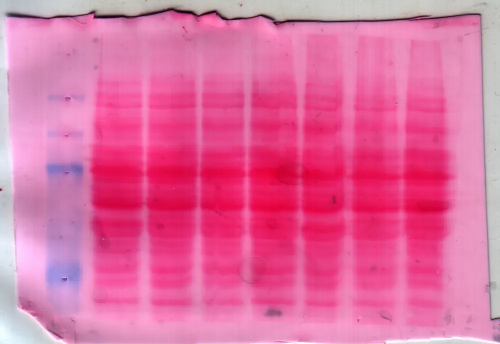

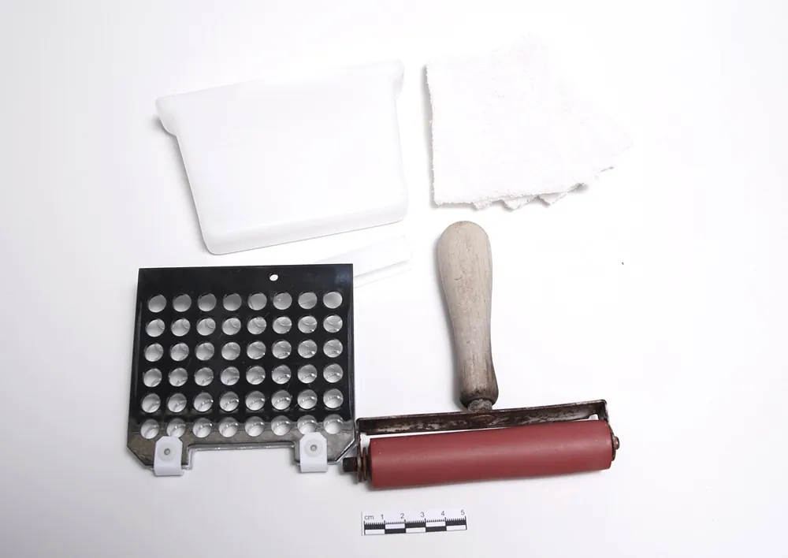

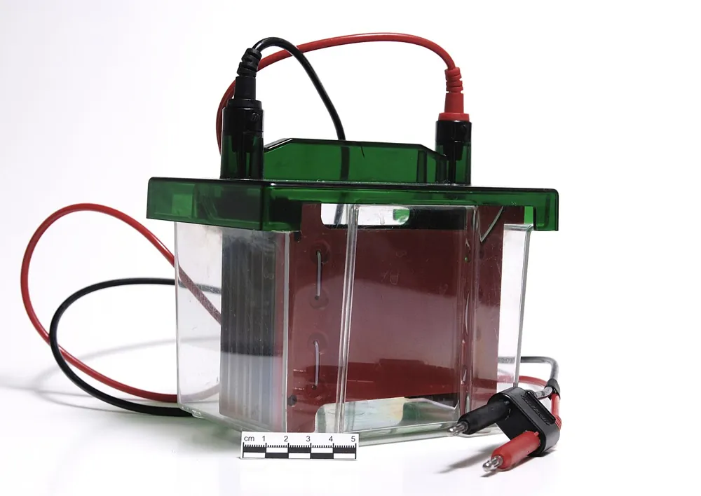

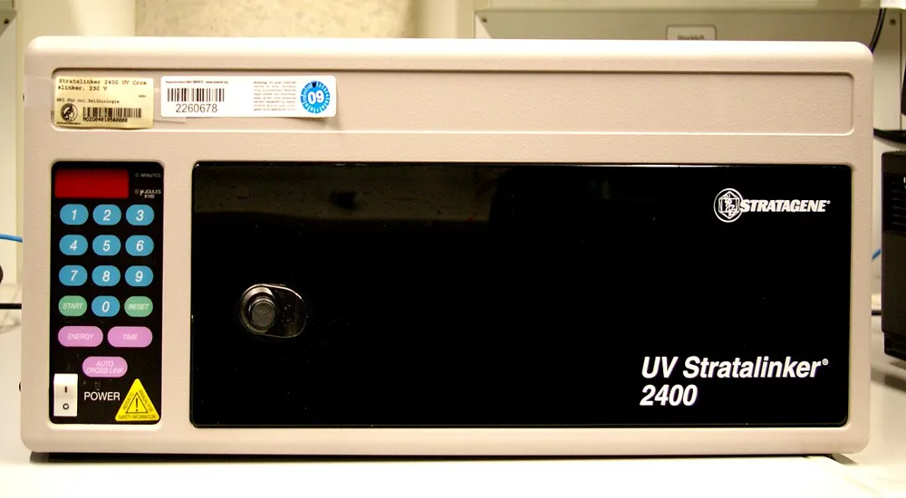

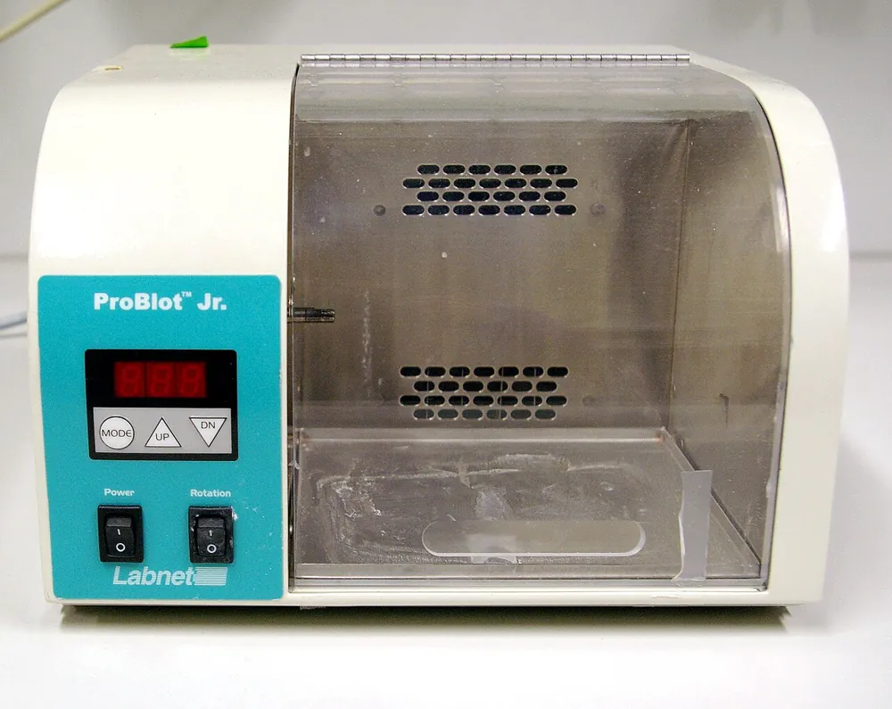
05Саузерн-блоттинг: ДНК
Саузерн-блоттинг виявляє конкретну послідовність ДНК серед усієї геномної ДНК. Його принцип — комплементарна гібридизація: одноланцюгова ДНК, іммобілізована на мембрані, за правилом Уотсона — Кріка зв’язується з міченим ДНК- чи РНК-зондом [11].
Геномна ДНК надто довга, тому її спершу ріжуть рестриктазами; отримані дволанцюгові фрагменти розділяють в агарозі за довжиною (фосфатні групи несуть негативний заряд, тож ДНК рухається до анода). Для ефективного виходу великих (> 10–15 т.п.н.) фрагментів гель обробляють 0,25 М HCl — депуринізація частково відщеплює пурини; наступна лужна обробка (0,5 М NaOH) розриває фосфодіефірний кістяк у депуринізованих місцях і водночас роз’єднує ланцюги, перетворюючи dsDNA на ssDNA, яка зв’язується з мембраною та гібридизується із зондом [4].
5.1Жорсткість відмивок: теорія й модель
Специфічність визначається жорсткістю (stringency): температурою й іонною силою відмивок. Для ДНК–ДНК-дуплексів температуру плавлення оцінюють за емпіричним рівнянням:
Перед відмивкою мембрана зв’язує зонд і з ідеальною мішенню, й із гомологічними (споріднені гени, паралоги). Підвищуючи жорсткість (менше SSC, вище T), поступово «знімаємо» неповні дуплекси й залишаємо тільки ідеальні. Це особливо важливо під час аналізу мультигенних родин.
Змінюйте концентрацію SSC, температуру, довжину зонда й GC-склад — бачите, які дуплекси лишаються на мембрані.
5.2Де застосовують у біохімії й фізіології рослин
- Кількість копій трансгена. Після Agrobacterium-опосередкованої чи біолістичної трансформації визначають кількість вставок Т-ДНК (пшениця, кукурудза, тютюн, ріпак): однокопійні лінії зручніші для селекції й стабільніші [11].
- Епігенетичне метилювання. Використовують пари чутливих і нечутливих до метилювання ізошизомерів (HpaII / MspI або Sau3AI / MboI) і оцінюють статус цитозинового метилювання (CG, CHG, CHH) у промоторах стресових генів [17].
- Мультигенні родини — наприклад, гени Рубіско активази TaRca1, білків теплового шоку HSP, лектинів бобових [18].
- Класична генетика: картування рестрикційних сайтів, RFLP, діагностика делецій/дуплікацій, довжина теломер, аналіз мтДНК.
5.3У вірусології рослин
Для ДНК-вмісних вірусів (родина Geminiviridae, роди Begomovirus, Mastrevirus, Curtovirus; а також Caulimoviridae) Саузерн-блот — «золотий стандарт»: без рестрикції одночасно видно одноланцюгову ДНК (ssDNA), суперспіралізовану (scDNA), відкриту кільцеву (ocDNA) та лінійну форми вірусної ДНК в інфікованих тканинах (Nicotiana benthamiana, бавовник, маніок, томат) [19, 17]. Так само підтверджують транс-реплікацію сателітів (альфа-, бета-) і дефектних інтерферуючих ДНК та перевіряють інфекційні клони [20].

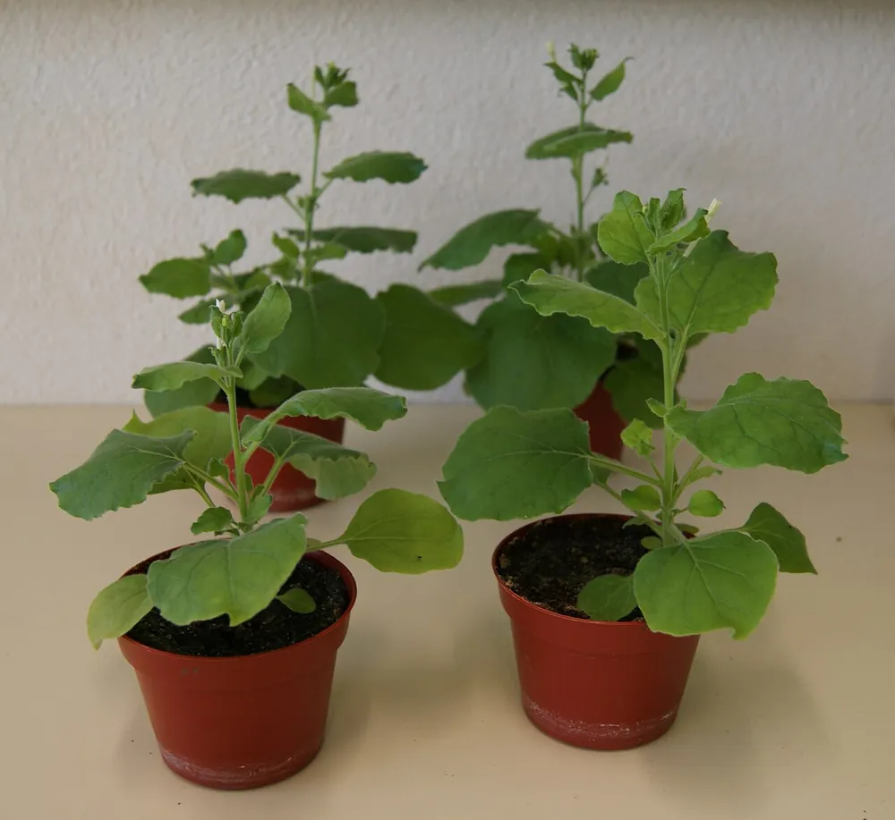

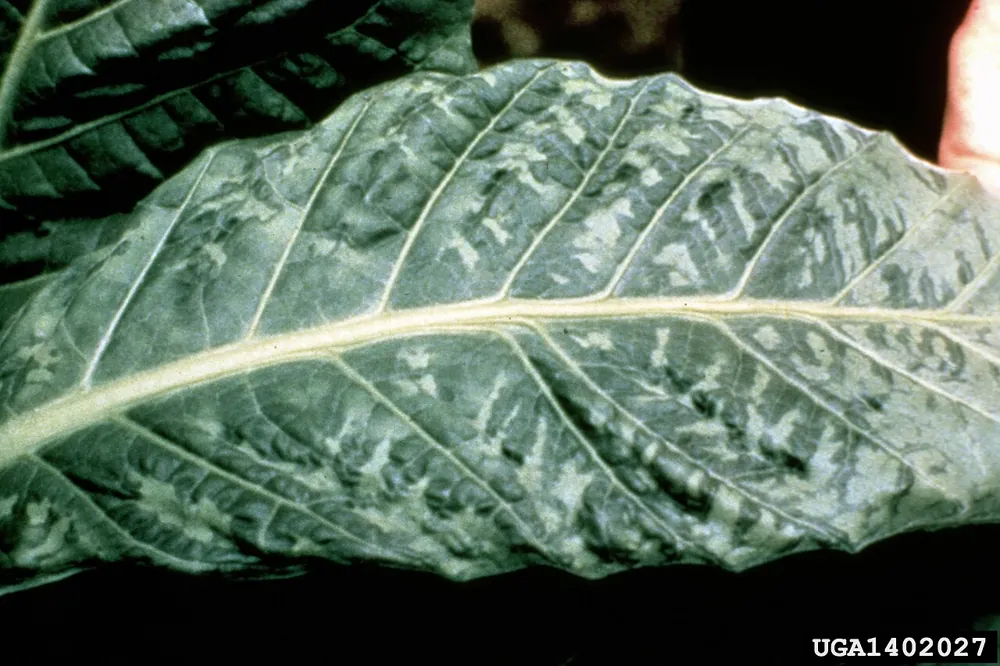
5.4Віртуальний Саузерн: копійність трансгена й метилування
Модель відтворює два типові завдання: підрахунок копій трансгена у трансформованих ліній та оцінку метилювання через пари ізошизомерів. Змінюйте фермент і зонд та читайте блот.
Навчальні дані: розміри фрагментів умовні.
5.5Обладнання й реактиви
Показати список
Обладнання: горизонтальна камера для агарозного електрофорезу з джерелом живлення; УФ-трансілюмінатор з гель-документацією; орбітальний шейкер; установка для капілярного блоттингу (ванночка, місток, вантаж 0,5–1 кг) або вакуумний блоттер; УФ-крослінкер (254 нм, 120 мДж/см²) чи вакуумна піч (80 °C); гібридизаційна піч із обертовими циліндрами; водяна баня; рентгенівська касета з екранами або хемілюмінесцентний іміджер.
Реактиви: агароза молекулярної чистоти; 1× TAE або 0,5× TBE; рестриктази (EcoRI, BamHI, HindIII) з буферами; маркер ДНК (бажано DIG-мічений); EtBr або SYBR Safe; 0,25 М HCl; денатуруючий розчин (0,5 М NaOH + 1,5 М NaCl); нейтралізуючий розчин (0,5–1,0 М Tris-HCl, pH 7,5 + 1,5 М NaCl); 20× SSC (3 М NaCl, 0,3 М цитрат натрію, pH 7,0); позитивно заряджена нейлонова мембрана (Hybond-N+) і Whatman 3MM; прегібридизаційний буфер (DIG Easy Hyb або Денхардта, 5× SSC, 0,1 % SDS, 50 % формамід, ДНК сперми лосося 100 мкг/мл); мічений зонд (DIG High Prime або [α-³²P]dCTP); розчини відмивок (2× SSC + 0,1 % SDS; 0,1–0,5× SSC + 0,1 % SDS); анти-DIG-AP та субстрат CSPD/CDP-Star.
5.6Покроковий алгоритм
- 1
Виділення й рестрикція ДНК4–12 год
Виділіть високомолекулярну геномну ДНК з листя (наприклад, CTAB-методом). Візьміть 5–10 мкг ДНК (геном рослини) або 1–5 мкг тотальної ДНК (виявлення гемінівірусів без рестрикції), додайте 20–50 од. рестриктази в 1× буфері; 37 °C.
Неповна рестрикція дає «хвости» й зайві смуги — перевіряйте аліквоту в гелі.
- 2
Електрофорез3–4 год або «на ніч»
Нанесіть зразки й маркер на 0,8 % агарозний гель; 1–3 В/см (30–60 В на ніч або 80–100 В 3–4 год). Сфотографуйте гель поруч із флуоресцентною лінійкою.
- 3
Депуринізація (для > 10 т.п.н.)10–15 хв
Занурте гель у 0,25 М HCl на шейкері до жовтого кольору бромфенолового синього; промийте водою.
Не перетримуйте: зайва депуринізація дає надто короткі фрагменти.
- 4
Денатурація2 × 15–20 хв
Двічі промийте гель денатуруючим розчином (0,5 М NaOH, 1,5 М NaCl) — dsDNA стає ssDNA.
- 5
Нейтралізація2 × 15–20 хв + 10 хв
Двічі промийте нейтралізуючим розчином (1 М Tris-HCl pH 7,5; 1,5 М NaCl) і врівноважте 10 хв у 20× SSC.
- 6
Збирання капілярного блота12–18 год
У ванночку з 20× SSC покладіть скляну пластину з «ґнітом» Whatman 3MM. Послідовно: гель (лунками донизу) → змочена нейлонова мембрана → 3 аркуші Whatman → стопка рушників 8–10 см → скло → вантаж 500 г. Викочуйте бульбашки скляною паличкою.
Бульбашки повітря й «короткі замикання» навколо гелю (рушники, що торкаються ґніта) порушують перенос.
- 7
Фіксація≈ 2 год
Розберіть піраміду, олівцем позначте положення лунок, ополосніть мембрану в 2× SSC і зафіксуйте ДНК УФ (120 мДж/см²) або запіканням 80 °C, 2 год.
- 8
Прегібридизація та гібридизація1–2 год + 12–16 год
Прегібридизація 1–2 год при 42 °C (50 % формамід) або 65 °C (водний буфер). Зонд денатуруйте 5 хв при 95–100 °C і одразу на лід; 10–25 нг/мл у свіжому буфері; гібридизація 12–16 год.
- 9
Відмивки різної жорсткості≈ 40 хв
2 × 5 хв у 2× SSC, 0,1 % SDS при кімнатній температурі; потім 2 × 15 хв при 65–68 °C у 0,5× або 0,1× SSC, 0,1 % SDS.
Саме ця стадія визначає специфічність (див. симулятор вище).
- 10
Детекція1–3 год
Радіоактивний зонд: плівка при −80 °C. DIG-зонд: блокуючий буфер 30 хв → анти-DIG-AP 30 хв → промивання → CDP-Star → іміджер.
06Нозерн-блоттинг: РНК
Нозерн-блоттинг визначає розмір і кількість конкретної РНК (мРНК, пре-мРНК, вірусні РНК, мікро- і малі інтерферуючі РНК). Принцип той самий, що в Саузерн-блоті, але РНК потрібно розділяти в денатуруючих умовах [13].
Одноланцюгова РНК легко утворює внутрішньомолекулярні шпильки й петлі за рахунок спарювання основ, що спотворює електрофоретичну рухливість: два фрагменти однакової довжини з різними вторинними структурами мігрують по-різному. Тому в гель і буфер для зразка вводять формальдегід і формамід, гліоксаль із ДМСО або 7–8 М сечовину (для ПААГ): водневі звʼязки руйнуються, і РНК мігрує пропорційно довжині [21].
6.1Застосування в біохімії та фізіології рослин
- Експресія генів на рівні транскрипції: пряма оцінка рівня, точний розмір мРНК, альтернативні сплайс-варіанти, процесинг рРНК (28S/25S, 18S, 5,8S, 5S) і малих некодуючих РНК.
- Стрес-індуковані та фотосинтетичні гени: накопичення транскриптів Рубіско активази TaRca1 у термотолерантних та термочутливих сортів пшениці при тепловому стресі [18]; реакція на зміну CO₂ у Chlamydomonas.
- Тканинна й добова специфічність — корінь, листок, стебло, суцвіття, плід; дія ABA, ауксинів, жасмонатів, саліцилової кислоти.
- МікроРНК та транс-діючі siRNA, що регулюють морфогенез листка, перехід до цвітіння, стійкість до посухи й засолення.
6.2Вірусологія рослин: геномні, субгеномні та малі РНК
Більшість вірусів рослин мають +ssRNA-геном. Нозерн-блот дозволяє на одній доріжці побачити всі сегменти геному вірусу огіркової мозаїки (CMV) — РНК1, РНК2, біцистронну РНК3 — та субгеномні РНК (РНК4, з якої транслюється білок оболонки CP, та РНК4A), а також вивчати вибіркову деградацію РНК3 системою нонсенс-залежного розпаду (NMD) [22]. Так само аналізують сателітні та дефектні інтерферуючі РНК (satRNA, DI-RNA) [23].
Високороздільний Нозерн у 15 % ПААГ із 7 М сечовиною використовують для виявлення вірусних малих інтерферуючих РНК (vsiRNA, 21–24 нт) — маркера противірусного РНК-сайленсингу (PTGS) під дією ферментів DCL2, DCL3, DCL4 та вірусних супресорів сайленсингу; β-елімінаційний тест показує 3′-метилювання малих РНК ферментом HEN1 [24, 25, 26].
Оберіть зонд — побачите, які РНК (геномні й субгеномні) його розпізнають.
6.3Обладнання й реактиви
Показати список
Обладнання: електрофоретична камера, очищена від РНКаз (3 % H₂O₂ чи RNaseZAP); витяжна шафа (формальдегід, формамід); водяна баня чи термоблок на 65 °C; установка для капілярного або напівсухого переносу; УФ-крослінкер; гібридизаційна піч; система детекції (плівка або CCD-іміджер).
Реактиви: TRIzol (гуанідинтіоціанат–фенол) для тотальної РНК; 0,1 % DEPC-вода (автоклавована); інгібітори РНКаз; 10× MOPS (0,2 М MOPS pH 7,0; 50 мМ ацетат натрію; 10 мМ ЕДТА); деіонізований формамід; 37 % формальдегід (12,3 М); агароза (мРНК) або акриламід/бісакриламід 19 : 1 + 7 М сечовина у 0,5× TBE (малі РНК); завантажувальний барвник з EtBr; позитивно заряджений нейлон; 20× (або 10×) SSC; 0,02 % метиленовий синій (у 0,3 М ацетаті натрію, pH 5,5) для видимості 25S/28S та 18S рРНК; DIG-мічений рибозонд (Т7/SP6 РНК-полімераза) або ДНК-олігонуклеотидний зонд; буфери прегібридизації та відмивок (2× SSC + 0,1 % SDS; 0,1× SSC + 0,1 % SDS).
6.4Покроковий алгоритм
- 1
Середовище без РНКаз≈ 4 год
Прожарте скло при 180–200 °C 4 год; пластикові камери й гребінки обробіть RNaseZAP або 0,1 М NaOH / 1 мМ ЕДТА і сполосніть DEPC-водою. Працюйте в нітрилових рукавичках.
РНКази всюдисущі: один дотик «голою» рукою може зруйнувати зразок.
- 2
Виділення та денатурація РНК≈ 30 хв
Виділіть тотальну РНК (5–15 мкг на доріжку). Змішайте з буфером денатурації (50 % формамід, 2,2 М формальдегід, 1× MOPS, EtBr 10 мкг/мл); 65 °C, 10–15 хв; на лід 2 хв.
- 3
Гель і електрофорез≈ 4 год
Розплавте 1,0–1,2 % агарозу в DEPC-воді, охолодіть до 55–60 °C, під витяжкою додайте 10× MOPS (до 1×) і 37 % формальдегід (0,66–2,2 М). Pre-run 15 хв при 5 В/см у 1× MOPS; внесіть зразки; 4–5 В/см 2–3 год. Перевірте цілісність під УФ: смуги 25S і 18S ≈ 2 : 1.
Для siRNA 21–24 нт замість агарози — 15 % ПААГ із 7 М сечовиною в 0,5× TBE.
- 4
Відмивання гелю й капілярний перенос12–16 год
Двічі по 15 хв у DEPC-воді, 15 хв у 10×–20× SSC (щоб видалити формальдегід, який заважає зв’язуванню). Збирайте блот як у Саузерні, нейлон Hybond-N+, 20× SSC. Для малих РНК з ПААГ — напівсухий електроперенос у 0,5× TBE, 10–15 В, 45–60 хв.
- 5
Фіксація й контроль навантаження≈ 2 год
УФ (120 мДж/см²) на вологій мембрані або 80 °C, 2 год. За потреби — 0,02 % метиленовий синій для документування рРНК. Для малих РНК — хімічний крослінкінг EDC при 60 °C.
- 6
Прегібридизація й гібридизація1 год + 12–16 год
ULTRAhyb або DIG Easy Hyb: 50 °C (ДНК-зонд) або 65–68 °C (DIG-рибозонд), 1 год; додайте денатурований мічений зонд, гібридизація 12–16 год.
- 7
Відмивки й детекція≈ 1,5 год
2 × 5 хв 2× SSC, 0,1 % SDS (кімн. т.); 2 × 15 хв 0,1× SSC, 0,1 % SDS (65–68 °C). Анти-DIG-AP + CDP-Star або авторадіографія.
07Вестерн-блоттинг: білки
Вестерн-блоттинг, або імуноблоттинг, поєднує високу роздільність електрофорезу білків у поліакриламідному гелі з SDS (метод Леммлі) і імунохімічну специфічність реакції «антиген — антитіло» на поверхні мембрани [1].
Аніонний детергент SDS у поєднанні з нагріванням (95 °C) та відновниками дисульфідних звʼязків (β-меркаптоетанол чи DTT) руйнує третинну й четвертинну структуру. SDS зв’язується з поліпептидом у сталому співвідношенні — приблизно 1,4 г SDS на 1 г білка (близько однієї молекули SDS на два амінокислотні залишки) [12]. Власний заряд білка перекривається, усі білки отримують однаковий питомий негативний заряд і рухаються до анода (+) з швидкістю, обернено пропорційною lg Mr.
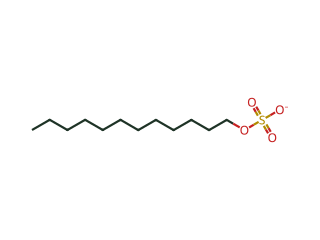
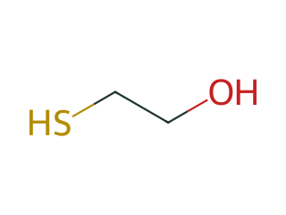
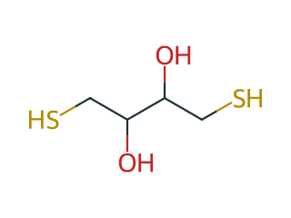
7.1Застосування в біохімії та фізіології рослин
- Біохімія: молекулярна маса й субодиничний склад; контроль експресії й очищення рекомбінантних білків із тегами (His, GST, GFP, FLAG); протеоліз і олігомеризація; підтвердження білок-білкових взаємодій після ко-імунопреципітації [27].
- Фотосинтетичний апарат: велика (RbcL ≈ 55 кДа) і мала (RbcS ≈ 15 кДа) субодиниці Рубіско, Рубіско активаза (Rca), білок D1 фотосистеми ІІ (PsbA) при фотоінгібуванні й тепловому стресі [18].
- Маркери абіотичного стресу: шаперони HSP70/HSP90/sHSP, дегідрини, LEA-білки, аквапорини (PIP, TIP), антиоксидантні ферменти (СОД, аскорбатпероксидази, каталази).
- Сигнальні каскади: Ca²⁺-залежні кінази (CDPK/CPK), МАР-кінази (MAPK3/MAPK6), деградація репресорів ауксинового та жасмонатного сигналінгу.
7.2У вірусології рослин
- Серологічна ідентифікація за білком оболонки (CP): виявлення капсидних білків CMV, TMV, Y-вірусу картоплі (PVY), вірусу шарки сливи (PPV) в екстрактах листків і насінні.
- Неструктурні вірусні білки: білки руху (MP), HC-Pro, РНК-залежні РНК-полімерази; у вірусу бронзовості томатів (Tomato spotted wilt virus, TSWV) — глікопротеїни GN та GC, що взаємодіють із рецепторами середньої кишки трипсів-переносників [28].

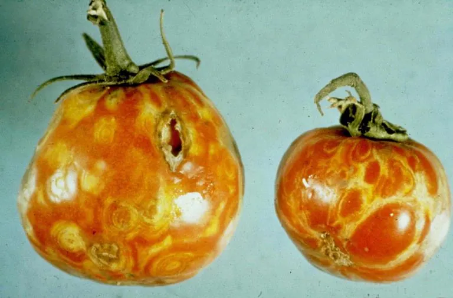
7.3Імунодетекція: прямий, непрямий та підсилений способи
Первинні антитіла розпізнають епітоп цільового білка; вторинні антитіла (проти виду, у якому отримано первинні) несуть фермент-репортер — пероксидазу хрону (HRP) або лужну фосфатазу (AP) чи флуорофор. Кілька вторинних молекул зв’язується з одним первинним антитілом — це підсилює сигнал порівняно з прямим мічення первинних.
Для HRP найпоширеніша хемілюмінесцентна реакція ECL: пероксидаза окиснює люмінол пероксидом водню, продукт — збуджений 3-амінофталат — повертається в основний стан, випромінюючи блакитне світло (≈ 425 нм). Підсилювачі (фенольні похідні) збільшують яскравість у десятки разів [14].
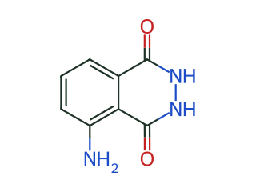
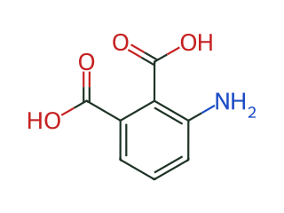
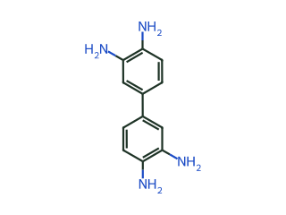
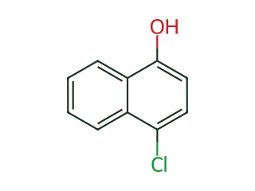
Перемикайте спосіб детекції й проходьте стадії — побачите, скільки молекул ферменту «працює» на одну молекулу антигену.
7.4Блокування: що використовувати
Блокуючий розчин «закриває» вільні ділянки мембрани інертним білком, щоб антитіла не зв’язувалися неспецифічно. Але універсального блокатора немає — вибір залежить від типу антитіла й мішені.
Оберіть тип дослідження — підказка покаже придатні й небезпечні блокатори.
7.5Обладнання й реактиви
Показати список
Обладнання: вертикальна камера для електрофорезу в ПААГ (Mini-PROTEAN); джерело струму; термоблок 95 °C; камера для мокрого (танкового) або напівсухого переносу з касетами, губками й охолодним елементом; орбітальний шейкер чи роллер; хемілюмінесцентний CCD-іміджер (ChemiDoc, LAS-4000).
Реактиви: буфер екстракції рослинних білків (Tris-HCl pH 7,5, 150 мМ NaCl, 1 % Triton X-100 або SDS, 5 мМ ЕДТА, 1–2 % ПВП/PVPP для зв’язування поліфенолів, коктейль інгібіторів протеаз PMSF/Complete); реактив Бредфорда чи BCA; буфер Леммлі (Tris-HCl pH 6,8, 2–4 % SDS, 10–20 % гліцерин, 5–10 % β-меркаптоетанол або 100 мМ DTT, 0,01 % бромфеноловий синій); акриламід/бісакриламід (29 : 1 чи 37,5 : 1), Tris-HCl pH 8,8 / 6,8, 10 % SDS, 10 % APS, TEMED; маркер маси (10–250 кДа, попередньо забарвлений); Tris–Gly–SDS (25 мМ Tris, 192 мМ гліцин, 0,1 % SDS, pH 8,3); буфер Товбіна (25 мМ Tris, 192 мМ гліцин, 20 % метанол, pH 8,3); PVDF (0,2 або 0,45 мкм) чи нітроцелюлоза; Ponceau S (0,1 % у 5 % оцтовій кислоті); TBST/PBST (+ 0,05–0,1 % Tween-20); блокуючий розчин (5 % знежирене молоко чи 3–5 % БСА в TBST); первинні й вторинні антитіла, мічені HRP/AP; ECL або NBT/BCIP чи DAB.
7.6Покроковий алгоритм
- 1
Екстракція й вирівнювання білка≈ 1 год
Гомогенізуйте тканину в рідкому азоті, екстрагуйте буфером з інгібіторами протеаз та ПВП, відцентрифугуйте (14 000 g, 15 хв, 4 °C); виміряйте концентрацію Бредфордом або BCA.
Рослинні екстракти містять поліфеноли та пігменти — без PVPP смуги «смикаються».
- 2
Денатурація≈ 10 хв
Однакова кількість білка (20–40 мкг на лунку) + буфер Леммлі; 95 °C, 5 хв.
- 3
SDS-PAGE1,5–2 год
Розділяючий 10–12 % і концентруючий 4–5 % гелі. Маркер (5 мкл) у першу лунку, зразки — у сусідні. 80 В у концентруючому гелі (20–30 хв), потім 120–150 В (60–90 хв) до виходу бромфенолового синього.
- 4
Підготовка мембрани≈ 15 хв
PVDF активуйте 100 % метанолом (30–60 с), промийте водою, врівноважте 10 хв у холодному буфері Товбіна. Нітроцелюлозу змочіть одразу в буфері.
Не торкайтеся мембрани пальцями; працюйте пінцетом.
- 5
Збирання «сендвіча»≈ 10 хв
Катод (−) → губка → Whatman → гель → мембрана → Whatman → губка → анод (+). Бульбашки викочуйте роллером.
Мембрана — з боку анода! (див. тренажер у розділі 4.)
- 6
Електроперенос60–90 хв
Мокрий: 100 В (250–350 мА), 60–90 хв, 4 °C з льодяним картриджем. Напівсухий: 15–25 В, 30–45 хв. Перевірте перенос Ponceau S (2 хв) і відмийте водою.
- 7
Блокування1 год
5 % знежирене молоко в TBST, 1 год, кімн. т. Для фосфо-специфічних антитіл — 3 % БСА (казеїн молока — фосфопротеїн!).
- 8
Первинні антитіла12–16 год або 1–2 год
Розведення 1 : 1000 – 1 : 5000 у блокуючому буфері; +4 °C на ніч або кімн. т. 1–2 год.
- 9
Відмивки й вторинні антитіла≈ 1,5 год
TBST 3–4 × 5–10 хв; анти-IgG-HRP/AP 1 : 5000 – 1 : 10 000 у TBST з 1–3 % молока/БСА, 1 год; знову 4 × 5–10 хв.
- 10
Візуалізація й нормалізація≈ 30 хв
ECL (1 : 1, 1–3 хв) та зйомка в CCD-іміджері або NBT/BCIP для AP. Для кількісної оцінки паралельно детектують «референсний» білок навантаження (актин, тубулін) або RbcL за Coomassie/Ponceau S.
7.7Нормалізація: чому не можна довіряти сирій інтенсивності
Різні доріжки зазвичай завантажено неоднаково; навіть «рівні» 30 мкг дають розкид. Тому інтенсивність цільової смуги ділять на інтенсивність референсу навантаження. Змоделюйте реальний експеримент: тепловий стрес і зміна HSP70 (Вестерн) чи транскрипту TaRca1 (Нозерн).
Навчальні дані: перемикайте нормалізацію, зверніть увагу на «хибне» зростання сигналу через нерівне навантаження.
7.8Типові проблеми й що з ними робити
Оберіть симптом на мембрані — побачите найімовірніші причини та дії.
08Істерн-блоттинг: ПТМ і глікозиди
Терміном Істерн-блоттинг у сучасній літературі охоплюють два споріднені, але методично різні напрями [9]:
- Білковий Істерн (ПТМ). Білки розділяють SDS-PAGE (або 2D-електрофорезом), переносять на PVDF чи нітроцелюлозу, а виявляють вже не амінокислотну послідовність, а небілкові групи й посттрансляційні модифікації — вуглеводні ланцюги (N- і O-глікозилювання), ліпідні «якорі» (пальмітоїлювання, GPI), фосфатні групи. Зондами слугують лектини (ConA, WGA), В-субодиниця холерного токсину (CTB) для ліпідів і гангліозидів, анти-фосфо та інші специфічні реагенти (наприклад, у дослідженнях антигенних модифікацій білків бактерій Ehrlichia) [10].
- ТШХ-Істерн (за Tanaka & Shoyama; Far-Eastern — Ishikawa & Taki). Розроблений для низькомолекулярних природних сполук — рослинних глікозидів, сапонінів, глікоалкалоїдів, глікосфінголіпідів [9, 29]. Такі малі молекули (< 1–2 кДа) є гаптенами й легко вимиваються з мембрани, тому застосовують хімічний принцип нижче.
8.1Хімія ТШХ-Істерн-блоттингу: як «прикріпити» глікозид до мембрани
- Рослинний екстракт розділяють на пластинці ТШХ/ВЕТШХ.
- Плями термічно переносять на PVDF або PES-мембрану [15].
- Періодат натрію (NaIO₄) селективно розщеплює вицинальні діольні групи цукрового залишку з утворенням реакційноздатних альдегідних груп (–CHO).
- У лужному карбонатному буфері альдегіди реагують з ε-аміногрупами лізину БСА (основи Шиффа): глікозид міцно ковалентно кріпиться до мембрани через білок-носій, а аглікон залишається доступним для специфічних моноклональних антитіл [29].
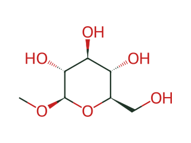
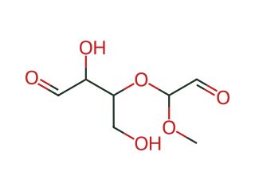
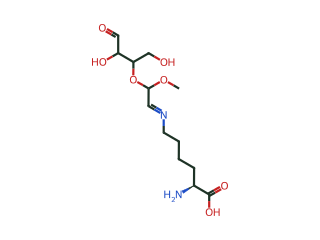
8.2Застосування у біохімії та фізіології рослин
- Профілювання глікому й ліпідому, порівняння патернів глікозилювання й фосфорилювання нативних та рекомбінантних білків [10].
- Скринінг вторинних метаболітів рослин навіть у нанограмових кількостях: сапоніни женьшеню (Panax ginseng, гінзенозиди Rb1, Rg1, Re), гліциризин із коренів солодки (Glycyrrhiza uralensis), сайкосапоніни (Bupleurum falcatum), стероїдні глікоалкалоїди пасльонових (Solanum; соламаргін, соласонін) [9, 30, 31].
- Подвійний Істерн і тканинний імуноблот (tissue printing): відбиток зрізу кореня чи стебла на мембрану для просторової локалізації метаболіту (наприклад, у корі чи паренхімі кореня женьшеню).
- Глікопротеїни й лектини: N-глікозилювання лектинів бобових (PHA-E, ConA), арабіногалактанових білків клітинної стінки [32].


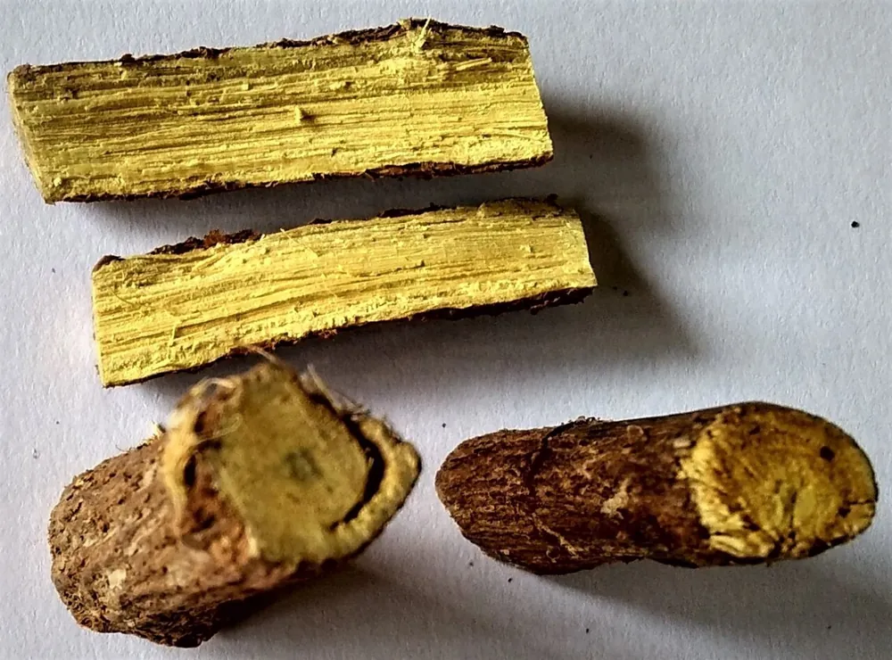

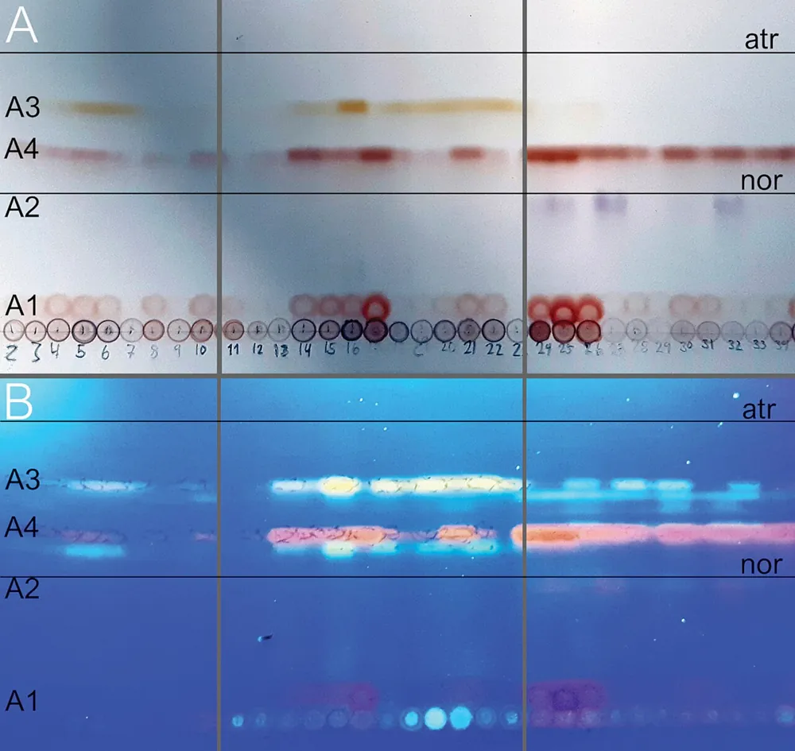

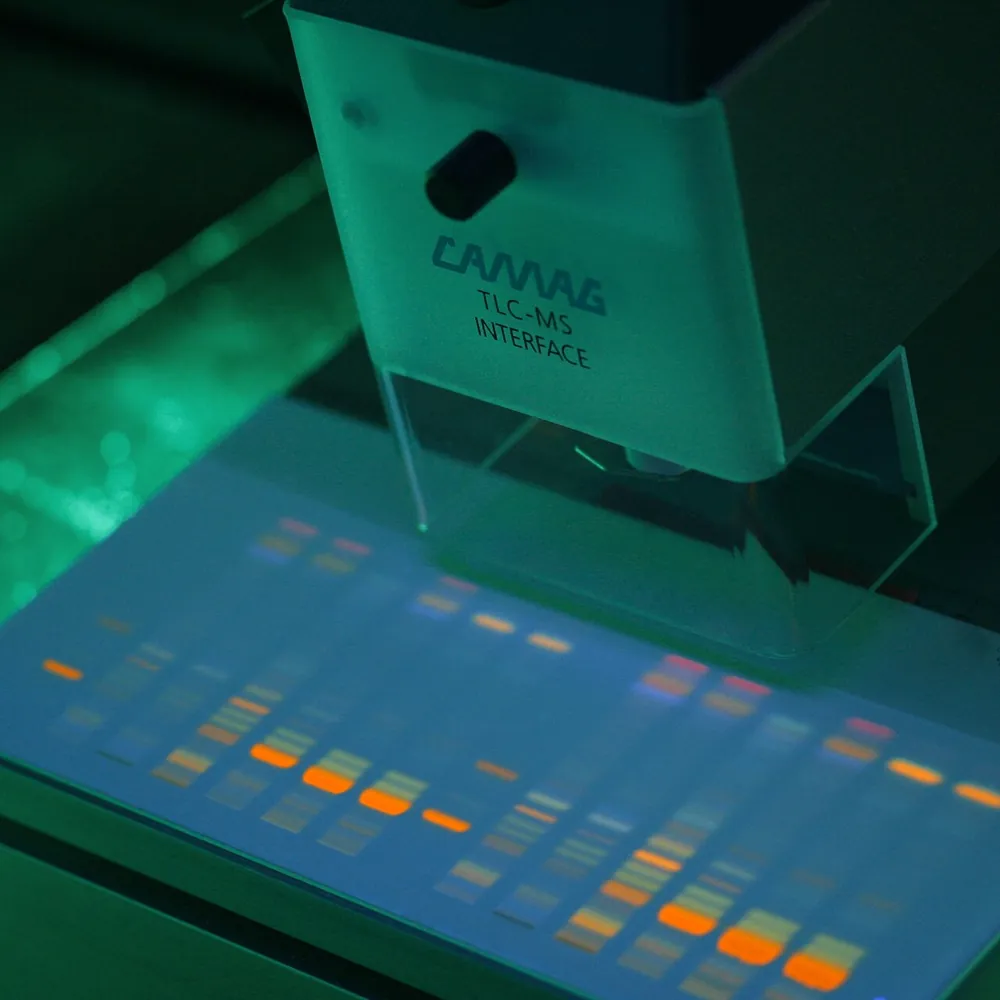
8.3У вірусології рослин
На відміну від більшості безоболонкових фітовірусів, представники родин Tospoviridae (Tomato spotted wilt virus) та Rhabdoviridae мають ліпідну оболонку з поверхневими глікопротеїнами (GN і GC у TSWV; G-білок у рабдовірусів). Лектиновий Істерн (ConA, WGA) і глікозидази (Endo H, PNGase F) доводять N-глікозилювання цих білків, критичне для зв’язування віріонів із рецепторами епітелію середньої кишки комах-переносників (трипсів, цикадок) [28]. Подібно оцінюють фосфорилювання й глікозилювання білків руху (MP) і капсидних білків (CP).
8.4Покрокова модель ТШХ-Істерн-блоттингу
Проходьте стадії протоколу А (глікозиди) чи Б (лектини) — схема покаже, що відбувається на кожній з них.
8.5Обладнання й реактиви
Показати список
ТШХ-Істерн: хроматографічна камера, ВЕТШХ-пластинки Silica gel 60, мікрокапіляри чи автоматичний аплікатор, термічний блоттер (120–180 °C) або нагрівальний прес, УФ-лампа (254/365 нм). Рухома фаза (н-бутанол : етилацетат : вода, 15 : 1 : 4 або хлороформ : метанол : вода, 6 : 4 : 1); розчинник переносу (ізопропанол : метанол : вода, 1 : 4 : 20, або ізопропанол : 0,2 % CaCl₂ : метанол, 40 : 20 : 7); PVDF чи PES-мембрана, скловолоконні фільтри; NaIO₄ (10 мг/мл); 1 % БСА у 50 мМ карбонатному буфері pH 9,6; блокатор (5 % молоко або 3 % БСА у PBS); анти-глікозидні моноклональні антитіла (анти-Rb1, анти-гліциризин); IgG-HRP; 4-хлор-1-нафтол (1 мг/мл) + 0,03 % H₂O₂.
Білковий (лектиновий) Істерн: обладнання SDS-PAGE й електроблотингу, блокатор без глікопротеїнів (молоко дає сильний фон із лектинами!), біотинільовані або DIG-мічені лектини (ConA, WGA, PNA, SNA) чи CTB, стрептавідин-HRP, ECL чи DAB.
8.6Алгоритми
Протокол А: ТШХ-Істерн глікозидів і вторинних метаболітів (за Tanaka & Shoyama)
- 1
ТШХ≈ 1 год
Нанесіть мікрокапіляром метанольні екстракти й стандарти (1–5 мкг) на старт пластинки ВЕТШХ; розженіть до висоти 7–8 см, висушіть на повітрі.
- 2
Термічний перенос≈ 5 хв
Змочіть пластинку (обприскуванням або 15 с зануренням) розчинником переносу, накрийте активованою PVDF/PES, зверху PTFE-плівка й скловолоконний фільтр; термоблоттер при 120–180 °C 30–50 с.
- 3
Окиснення періодатом30–60 хв
Промийте мембрану водою й занурте у свіжий NaIO₄ (10 мг/мл) при перемішуванні.
Готуйте розчин свіжим.
- 4
Кон’югація з БСА3 год, 37 °C
Промийте водою й інкубуйте в 1 % БСА у 50 мМ карбонатному буфері pH 9,6 — глікозид–БСА кон’югат іммобілізується.
- 5
Імунодетекція≈ 4 год
TPBS (PBS + 0,05 % Tween-20), блокування 5 % молоком 1 год; MAb проти глікозиду 1–3 год; IgG-HRP 1 год; проявіть свіжим 4-хлор-1-нафтолом (1 мг/мл) з 0,03 % H₂O₂ — плями від фіолетово-пурпурового до коричневого.
Протокол Б: лектиновий Істерн глікопротеїнів і вірусних оболонкових білків
- 1
SDS-PAGE й електроперенос≈ 3 год
Розділіть білковий екстракт або очищені віріони (наприклад, TSWV) і перенесіть на PVDF, як для Вестерну.
- 2
Спеціалізоване блокування1 год
3 % високоочищений БСА (glycoprotein-free) або 2 % ПВП-40 у TBST, з додаванням 1 мМ CaCl₂, 1 мМ MnCl₂, 1 мМ MgCl₂ (кофактори лектинів, як-от ConA).
Категорично уникайте сухого молока!
- 3
Лектин чи токсин1–2 год
Біотинільований лектин (ConA або WGA, 1–5 мкг/мл) чи біотинільована B-субодиниця CTB (для ліпопротеїнів), кімн. т.
- 4
Детекція≈ 1,5 год
TBST 4 × 5 хв; стрептавідин-HRP (1 : 5000, 45 хв); знову промивання; ECL чи DAB.
Контроль специфічності: паралельна смужка після PNGase F (відщеплює N-глікани) або лектин із конкурентним цукром (0,2 М α-метилманозид для ConA).
09Блоттинг у задачах біології рослин
Нижче зведено, як типові дослідницькі питання з фізіології, біохімії та вірусології рослин «перекладаються» на мову блоттингу. Якщо ви стоїте перед рішенням, який блот використати, починайте з другої колонки.
| Питання | Метод | Що бачимо | Мембрана й зонд |
|---|---|---|---|
| Скільки копій T-ДНК у трансгенній лінії пшениці? | Саузерн | рестрикція ферментом, що ріже Т-ДНК один раз → кількість смуг = кількість вставок | Нейлон, DIG- або ³²P-зонд до гена |
| Чи метильований промотор стресового гена? | Саузерн | пари HpaII / MspI: високомолекулярна смуга при HpaII = метилювання CCGG | Нейлон, зонд до промотора |
| Які форми ДНК бегомовірусу присутні в листку N. benthamiana? | Саузерн | ssDNA, scDNA, ocDNA і лінійна форма без рестрикції | Нейлон, зонд до вірусної ДНК |
| Яка кількість мРНК TaRca1 у листках при тепловому стресі? | Нозерн | смуга транскрипта; нормалізація до 25S/18S рРНК | Нейлон, DIG-рибозонд |
| Чи є в листку CMV субгеномні РНК? | Нозерн | РНК1–3 і субгеномні РНК4/4A; вибір зонда визначає, що світиться | Нейлон, 3′-кінцевий зонд |
| Чи запущено противірусний РНК-сайленсинг? | Нозерн (малі РНК) | смуга vsiRNA 21–24 нт у 15 % ПААГ із 7 М сечовиною | Нейлон + EDC, DIG- чи ³²P-зонд |
| Скільки HSP70 накопичується під тепловим стресом? | Вестерн | смуга ≈ 70 кДа; нормалізація до актину чи Rubisco (Ponceau S) | PVDF, антитіла до HSP70 |
| Яка частка D1 (PsbA) зникає при фотоінгібуванні? | Вестерн | смуга ≈ 32–34 кДа | PVDF, анти-PsbA |
| Чи є капсидний білок PVY у насінні? | Вестерн | смуга CP ≈ 30 кДа | PVDF/нітроцелюлоза, антитіла до CP |
| Чи глікозильовані білки GN та GC у TSWV? | Істерн (лектин) | ConA/WGA, обробка PNGase F знімає сигнал | PVDF, glycoprotein-free БСА |
| Скільки гінзенозиду Rb1 у різних екстрактах женьшеню? | Істерн (ТШХ) | пляма на PVDF з анти-Rb1 MAb, до нанограмів | PVDF/PES, NaIO₄ + БСА |
| Де в корені локалізований гліциризин? | Істерн (tissue printing) | відбиток зрізу на PVDF → просторовий розподіл | PVDF, анти-гліциризин MAb |
10Фотогалерея
Фотографії з відкритих джерел: реальні авторадіограми, мембрани, гелі й лабораторне обладнання. Усі зображення збережено на сайті й підписано автором та ліцензією.

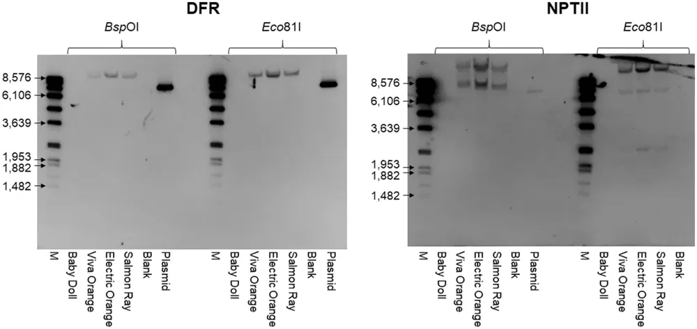

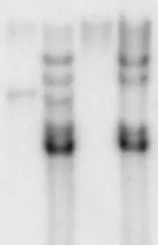

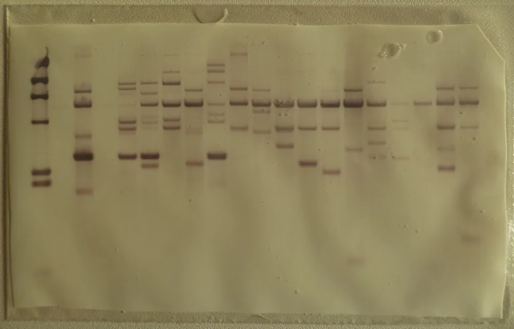

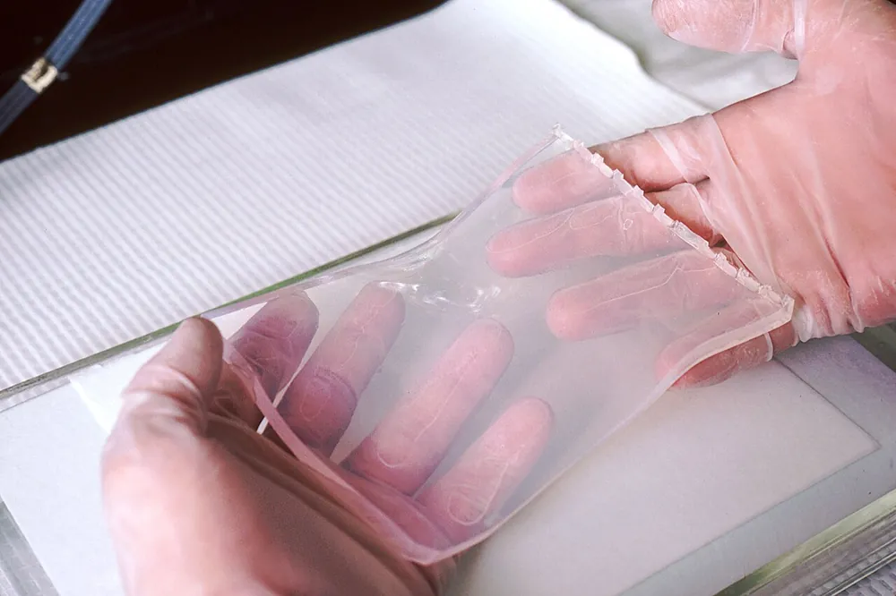

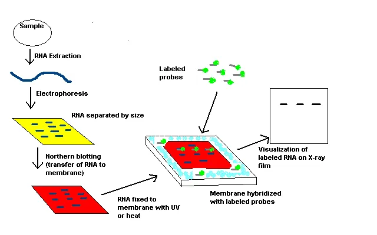

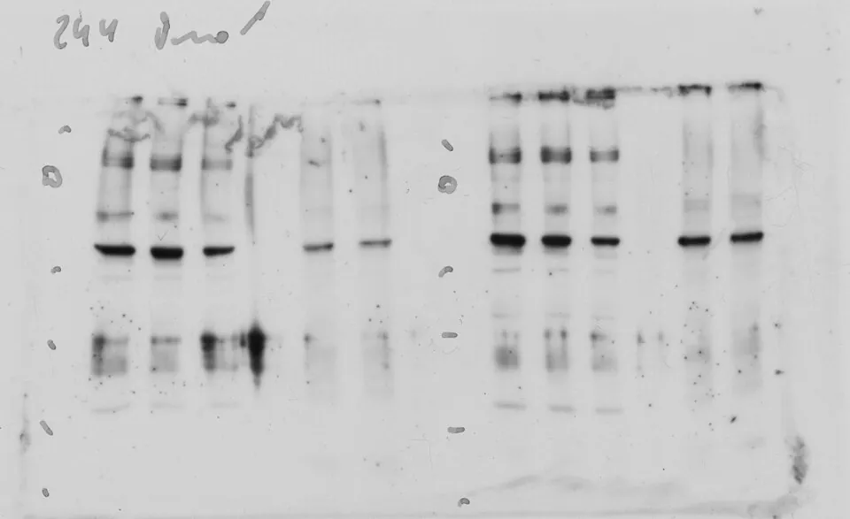

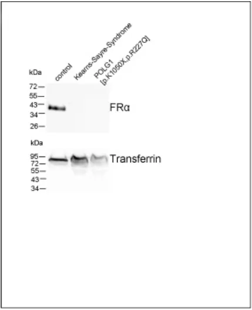

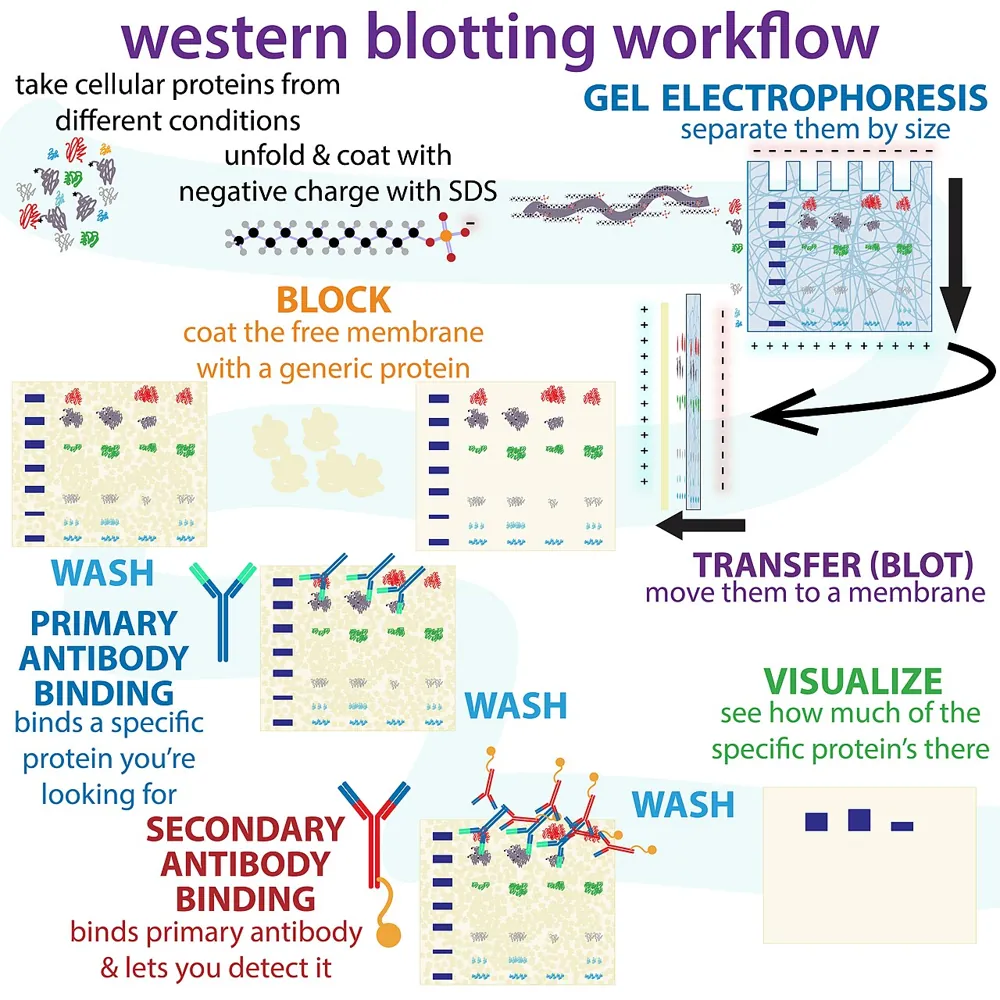

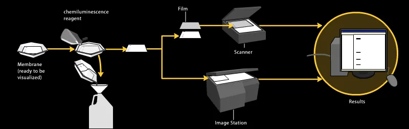

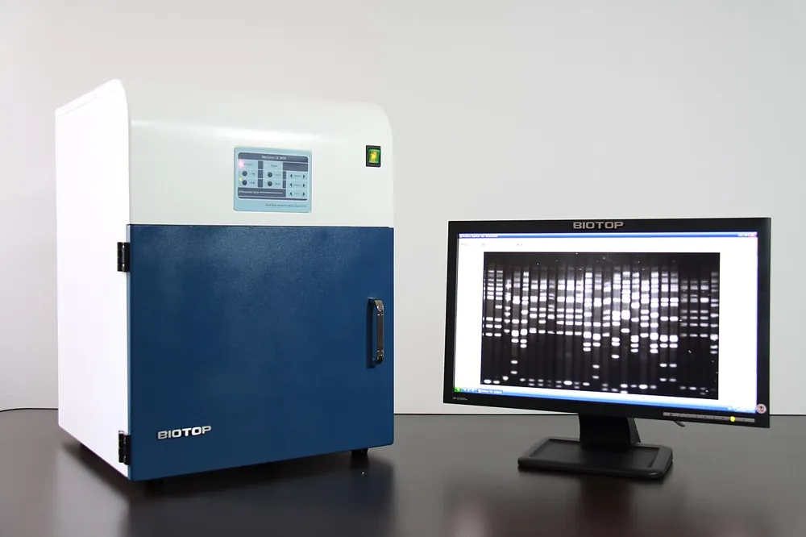

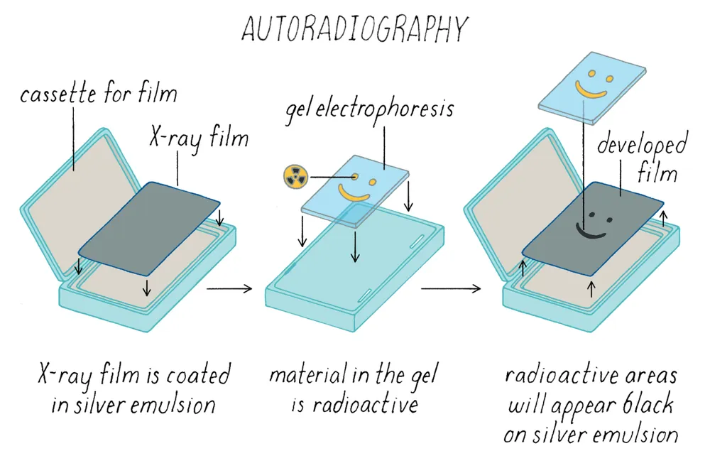

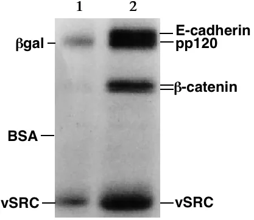

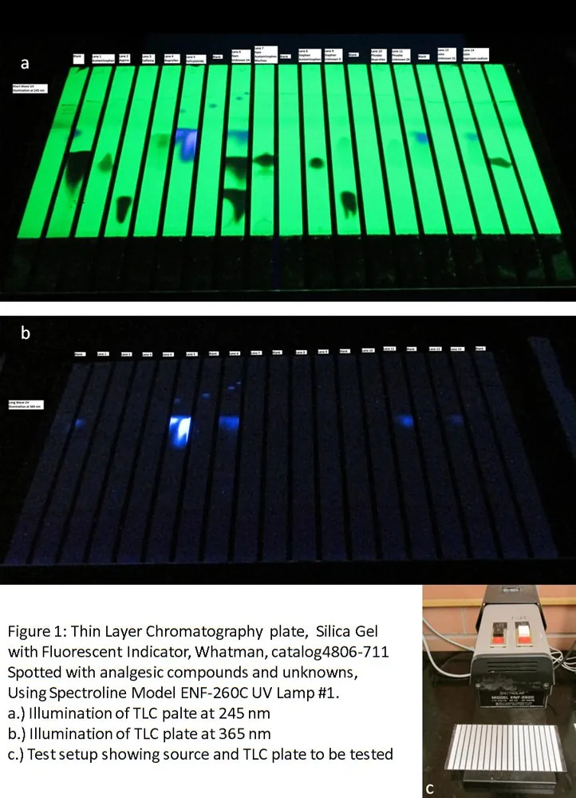

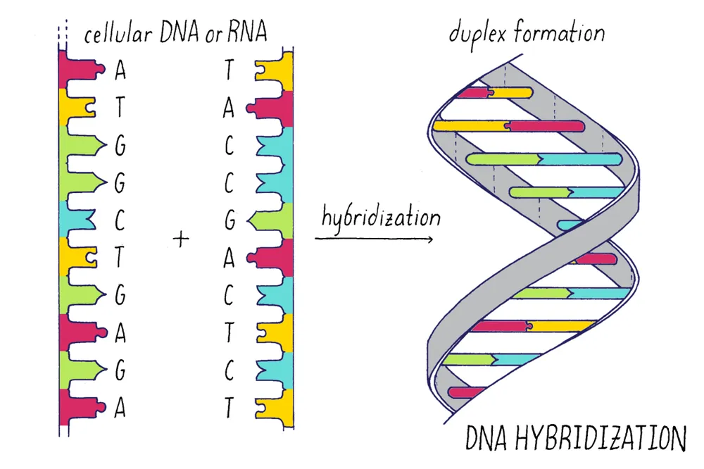

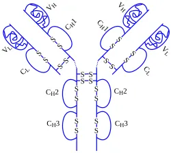

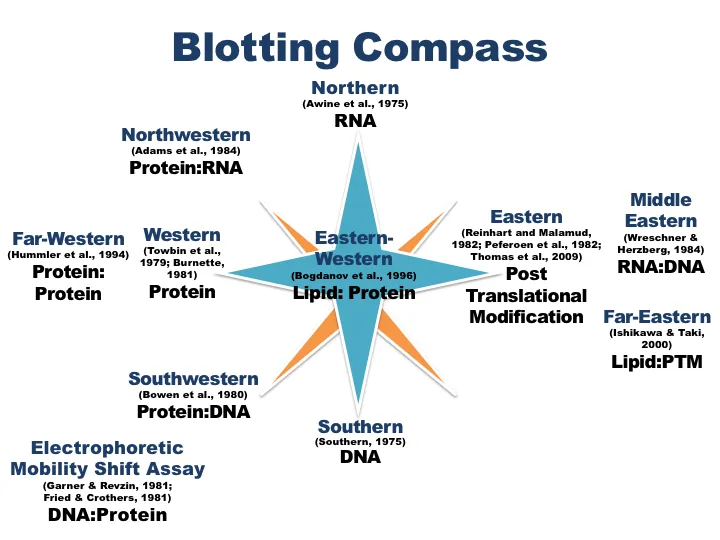
Для порівняння з власним дослідом корисні й оригінальні рисунки в відкритих статтях: Саузерн реплікативних форм ДНК бегомовірусу в N. benthamiana [19], Нозерн РНК1–3 вірусу огіркової мозаїки [22], схеми Вестерн-блоттингу [1], фото ТШХ і Істерн-блоту гінзенозидів [9], гліциризину [31] та 2D-Істерн із холерним токсином В [10].
11Безпека й контроль якості
Блоттинг — один із «найнебезпечніших» за кількістю реактивів видів аналізу. Кілька правил, які варто засвоїти до першого досліду:
Хімічна безпека
- Акриламід (до полімеризації) — нейротоксин: тільки в рукавичках; готовий гель безпечніший.
- Формальдегід, формамід, β-меркаптоетанол, метанол — тільки під витяжкою.
- Бромистий етидій — мутаген; замінюйте SYBR Safe, утилізуйте окремо.
- HCl, NaOH — у денатурації й депуринізації; захист очей.
Радіація та УФ
- Радіоактивні зонди (³²P) — лише в дозиметричній лабораторії, із захисним екраном; сучасні протоколи віддають перевагу DIG/хемілюмінесценції.
- УФ-трансілюмінатор і крослінкер — працюйте за зачиненою кришкою й у захисному щитку.
Контролі, без яких результат недостовірний
- Позитивний контроль (відомий зразок із мішенню) і негативний (без мішені).
- Контроль навантаження (рРНК, актин/тубулін, Ponceau S).
- Контроль специфічності: зонд-«скремблер», пригнічення антитіла антигеном, PNGase F для лектинів.
- Маркер розміру на кожному гелі — як для оцінки, так і для калібрування.
Відтворюваність і чесна обробка
- Три біологічні повтори; не обрізайте блот так, щоб зникали інші смуги.
- Сигнал має бути в лінійному діапазоні детектора: насичений сигнал неможливо кількісно порівнювати.
- Зберігайте оригінальні зображення й протоколи (концентрації, розведення антитіл, час експозиції).
12Контрольні питання
Чому гель не можна зондувати безпосередньо й потрібен перенос на мембрану?
Для чого потрібна депуринізація при Саузерн-блоті?
Чому Нозерн проводять у денатуруючому гелі?
Навіщо в Нозерн-блоті метиленовий синій або фарбування рРНК?
Що забезпечує однаковий питомий заряд білків у SDS-PAGE?
Яким боком до анода має лежати мембрана в «сендвічі» Вестерн-блоту й чому?
Чому PVDF треба активувати метанолом, а нітроцелюлозу — ні?
Чому для фосфо-специфічних антитіл не можна блокувати молоком?
Чому для лектинових блотів не підходить молоко?
Як працює ECL-детекція?
Як підвищити жорсткість відмивки в Саузерн-блоті?
Яка роль періодату й БСА в ТШХ-Істерн-блоті глікозидів?
Як за допомогою двох ізошизомерів (HpaII і MspI) оцінити метилювання?
Чому Саузерн-блот — «золотий стандарт» для ДНК-вірусів рослин?
13Література
- Sule R., Rivera G., Gomes A.V. (2023) Western blotting (immunoblotting): history, theory, uses, protocol and problems. Biotechniques 75(3): 99-114. doi:10.2144/btn-2022-0034
- Singh R.K., Bose D., Robertson E.S. (2026) Protocol to investigate replication kinetics of Kaposi's sarcoma-associated herpesvirus using single-molecule analysis of replicated DNA. STAR Protoc 7(1): 104287. doi:10.1016/j.xpro.2025.104287
- Southern E.M. (1975) Detection of specific sequences among DNA fragments separated by gel electrophoresis. Journal of Molecular Biology 98(3): 503-517. doi:10.1016/s0022-2836(75)80083-0
- Wheeler J.H., Young C.K.J., Young M.J. (2019) Analysis of Human Mitochondrial DNA Content by Southern Blotting and Nonradioactive Probe Hybridization. Curr Protoc Toxicol 80(1): e75. doi:10.1002/cptx.75
- Alwine J.C., Kemp D.J., Stark G.R. (1977) Method for detection of specific RNAs in agarose gels by transfer to diazobenzyloxymethyl-paper and hybridization with DNA probes. Proceedings of the National Academy of Sciences 74(12): 5350-5354. doi:10.1073/pnas.74.12.5350
- Towbin H., Staehelin T., Gordon J. (1979) Electrophoretic transfer of proteins from polyacrylamide gels to nitrocellulose sheets: procedure and some applications. Proceedings of the National Academy of Sciences 76(9): 4350-4354. doi:10.1073/pnas.76.9.4350
- Burnette W.N. (1981) “Western Blotting”: Electrophoretic transfer of proteins from sodium dodecyl sulfate-polyacrylamide gels to unmodified nitrocellulose and radiographic detection with antibody and radioiodinated protein A. Analytical Biochemistry 112(2): 195-203. doi:10.1016/0003-2697(81)90281-5
- Laemmli U.K. (1970) Cleavage of Structural Proteins during the Assembly of the Head of Bacteriophage T4. Nature 227(5259): 680-685. doi:10.1038/227680a0
- Tanaka H., Morinaga O., Uto T. et al. (2012) Application of Monoclonal Antibodies against Bioactive Natural Products: Eastern Blotting and Preparation of Knockout Extract. Int J Anal Chem 2012: 260425. doi:10.1155/2012/260425
- Thomas S., Thirumalapura N., Crossley E.C. et al. (2009) Antigenic protein modifications in Ehrlichia. Parasite Immunol 31(6): 296-303. doi:10.1111/j.1365-3024.2009.01099.x
- Codner G.F., Erbs V., Loeffler J. et al. (2021) Universal Southern blot protocol with cold or radioactive probes for the validation of alleles obtained by homologous recombination. Methods 191: 59-67. doi:10.1016/j.ymeth.2020.06.011
- Bass J.J., Wilkinson D.J., Rankin D. et al. (2017) An overview of technical considerations for Western blotting applications to physiological research. Scand J Med Sci Sports 27(1): 4-25. doi:10.1111/sms.12702
- Yang T., Zhang M., Zhang N. (2022) Modified Northern blot protocol for easy detection of mRNAs in total RNA using radiolabeled probes. BMC Genomics 23(1): 66. doi:10.1186/s12864-021-08275-w
- Ha S.G., Park J.H., Kim M.Y. et al. (2025) Brief guide to western blot assays. Mol Cells 48(12): 100297. doi:10.1016/j.mocell.2025.100297
- Taki T., Gonzalez T.V., Goto-Inoue N. et al. (2009) TLC Blot (Far-Eastern Blot) and Its Applications. Methods in Molecular Biology: 545-556. doi:10.1007/978-1-59745-542-8_55
- Tanaka H., Putalun W., Shoyama Y. (2012) Fingerprinting of Natural Product by Eastern Blotting Using Monoclonal Antibodies. Chromatography Research International 2012: 1-7. doi:10.1155/2012/130732
- Paprotka T., Deuschle K., Metzler V. et al. (2011) Conformation-selective methylation of geminivirus DNA. J Virol 85(22): 12001-12. doi:10.1128/JVI.05567-11
- Kumar R.R., Goswami S., Singh K. et al. (2016) Identification of Putative RuBisCo Activase (TaRca1)-The Catalytic Chaperone Regulating Carbon Assimilatory Pathway in Wheat (Triticum aestivum) under the Heat Stress. Front Plant Sci 7: 986. doi:10.3389/fpls.2016.00986
- Zhao L., Che X., Wang Z. et al. (2022) Functional Characterization of Replication-Associated Proteins Encoded by Alphasatellites Identified in Yunnan Province, China. Viruses 14(2). doi:10.3390/v14020222
- Ding C., Qing L., Li Z. et al. (2009) Genetic determinants of symptoms on viral DNA satellites. Appl Environ Microbiol 75(16): 5380-9. doi:10.1128/AEM.01193-09
- Ahmad W., Gull B., Baby J. et al. (2021) A Comprehensive Analysis of Northern versus Liquid Hybridization Assays for mRNAs, Small RNAs, and miRNAs Using a Non-Radiolabeled Approach. Curr Issues Mol Biol 43(2): 457-484. doi:10.3390/cimb43020036
- Zhao D., Ahmed M.R., Tian M. et al. (2025) Selective Degradation of Cucumber Mosaic Virus RNA3 by Nonsense-Mediated Decay Benefits Viral Early Infection. Mol Plant Pathol 26(3): e70070. doi:10.1111/mpp.70070
- He L., Wang Q., Gu Z. et al. (2019) A conserved RNA structure is essential for a satellite RNA-mediated inhibition of helper virus accumulation. Nucleic Acids Res 47(15): 8255-8271. doi:10.1093/nar/gkz564
- Vogler H., Akbergenov R., Shivaprasad P.V. et al. (2007) Modification of small RNAs associated with suppression of RNA silencing by tobamovirus replicase protein. J Virol 81(19): 10379-88. doi:10.1128/JVI.00727-07
- Li J., Zheng H., Zhang C. et al. (2016) Different Virus-Derived siRNAs Profiles between Leaves and Fruits in Cucumber Green Mottle Mosaic Virus-Infected Lagenaria siceraria Plants. Front Microbiol 7: 1797. doi:10.3389/fmicb.2016.01797
- Donaire L., Barajas D., Martínez-García B. et al. (2008) Structural and genetic requirements for the biogenesis of tobacco rattle virus-derived small interfering RNAs. J Virol 82(11): 5167-77. doi:10.1128/JVI.00272-08
- Zhai Y., Gnanasekaran P., Pappu H.R. (2021) Identification and Characterization of Plant-Interacting Targets of Tomato Spotted Wilt Virus Silencing Suppressor. Pathogens 10(1). doi:10.3390/pathogens10010027
- Whitfield A.E., Ullman D.E., German T.L. (2004) Expression and characterization of a soluble form of tomato spotted wilt virus glycoprotein GN. J Virol 78(23): 13197-206. doi:10.1128/JVI.78.23.13197-13206.2004
- Shoyama Y. (2026) Antibodies as Tools for Characterization, Isolation and Production Enhancement of Anti-Cancer Drugs and Steroidal Hormones from Ginsenoside and Solasodine Glycoside: A Review. Antibodies (Basel) 15(1). doi:10.3390/antib15010010
- Uto T., Ohta T., Fujii S. et al. (2021) Immunological Separation of Bioactive Natural Compounds from Crude Drug Extract and Its Application for Cell-Based Studies. Antibodies (Basel) 10(4). doi:10.3390/antib10040048
- Morinaga O., Ishiuchi K., Ohkita T. et al. (2018) Isolation of a novel glycyrrhizin metabolite as a causal candidate compound for pseudoaldosteronism. Sci Rep 8(1): 15568. doi:10.1038/s41598-018-33834-9
- Katoch R., Tripathi A. (2021) Research advances and prospects of legume lectins. J Biosci 46(4). doi:10.1007/s12038-021-00225-8
Бібліографічні дані кожного джерела звірено з базами PubMed Central і Crossref. Протоколи в статті — навчальні узагальнення; перед роботою в лабораторії користуйтеся інструкціями виробників реактивів і вашою лабораторною методикою.